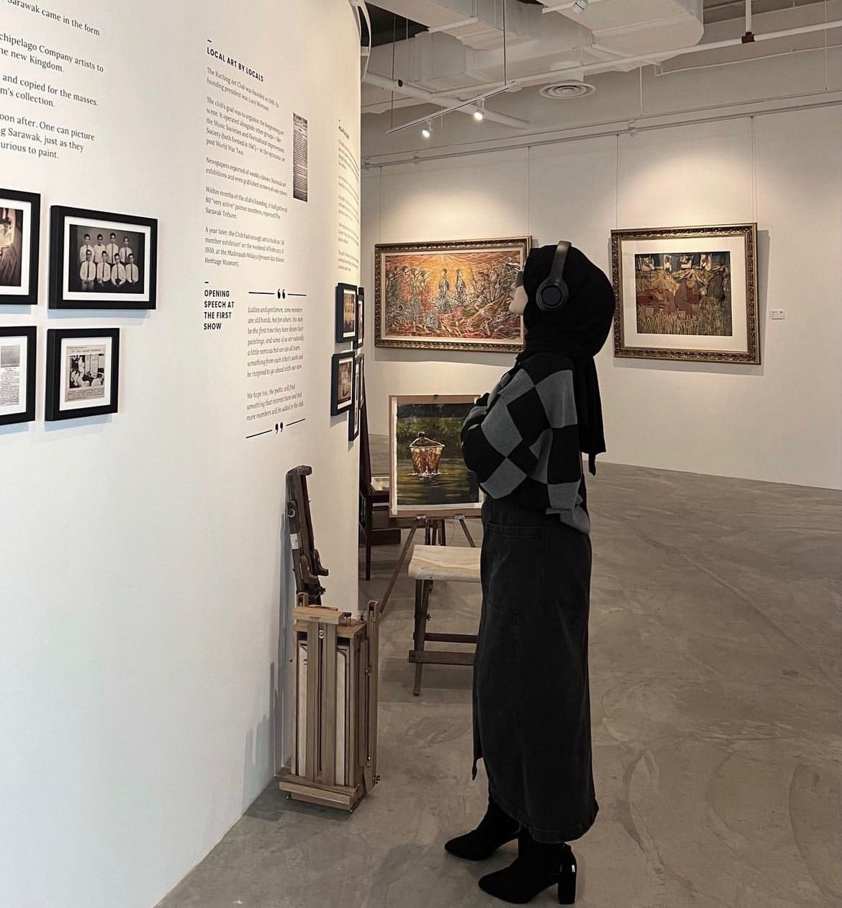

Hello!
Welcome to Tasya's personal website, TASPEDIA. Here you can find information about her background, experience, contact, and a gallery of her favorite moments.
Welcome to Tasya's personal website, TASPEDIA. Here you can find information about her background, experience, contact, and a gallery of her favorite moments.